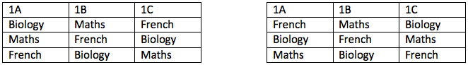

Author: I.V. Raskin
On the first day of school, in all three of the first year classes $($1A, 1B, 1C$)$, there were three lessons: Maths, French and Biology. Two classes cannot have the same lesson at the same time. 1B’s first lesson was Maths. The Biology teacher praised the students in 1B: "You have even better marks than 1A”. 1A’s second lesson was not French. Which class’s last lesson was Biology?
It follows from the condition that Biology was 1B’s second or third lesson. Suppose that it was in the second lesson. 1A had it earlier, that is, for its first lesson. Since 1A’s second lesson was not French, then it must have been its third lesson. Since 1B’s first lesson was Maths, then the French lesson could only be the third lesson. This is a contradiction. So, Biology was 1B’s third lesson.
1B’s.
